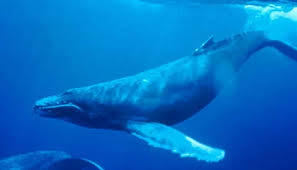
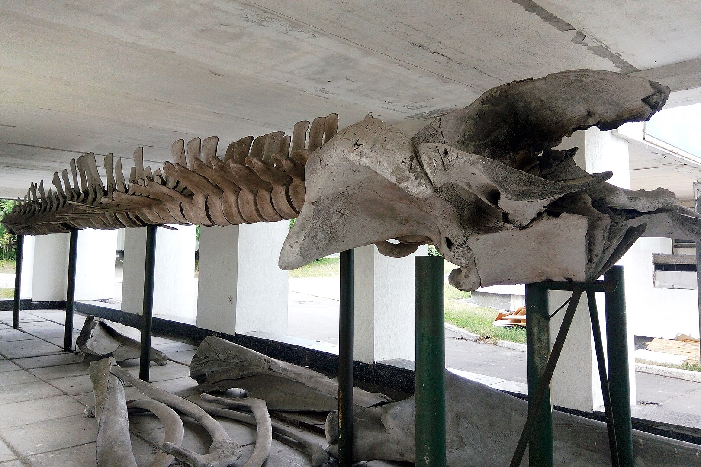
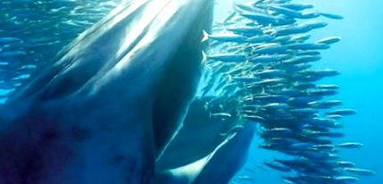
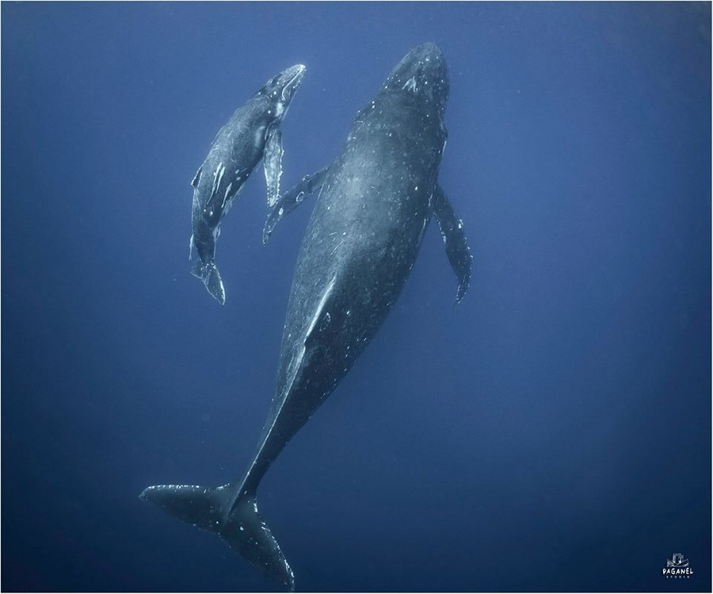

Самка блакитного кита – найбільша тварина на Землі
Блакитний кит (Balaenoptera musculus) – це найбільша тварина, що коли-небудь існувала на Землі. Самки цього виду зазвичай більші за самців і можуть досягати довжини понад 30 метрів та важити більше 150 тонн.
Розміри та анатомія
Самки блакитного кита мають видовжене тіло з гладкою світло-блакитною шкірою, яку покривають невеликі плями. У них є:
- Величезний рот, що може вмістити до 90 тонн води
- Балеенові пластини для фільтрації криля
- Масивні легені, що дозволяють затримувати дихання на до 20 хвилин
Скелет блакитного кита у музеї
Харчуваня
Незважаючи на величезні розміри, блакитні кити харчуються майже виключно крилем – дрібними ракоподібними. За день одна особина може з’їсти до 4 тонн криля.
Блакитний кит під час годування
Розмноження
Самки народжують раз на 2–3 роки, виношуючи дитинча приблизно 12 місяців. Новонароджений китеня вже має довжину 7–8 метрів і важить до 3 тонн.
Китеня поруч із самкою
Загрози та охорона
Популяція блакитних китів сильно скоротилася через полювання у XX столітті. Нині вони охороняються міжнародними угодами, але загрозу все ще становлять:
- Зіткнення з кораблями
- Забруднення океанів
- Кліматичні зміни
Щоб зберегти цих дивовижних гігантів, важливо підтримувати екологічні ініціативи та зменшувати забруднення морів.